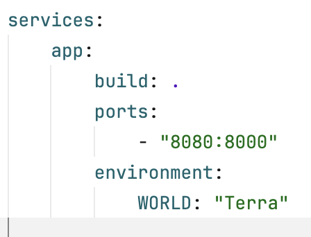

Clone Repository:
git clone https://github.com/casta-114/il-docker-workshop.gitcd il-docker-workshopdocker-compose up --buildHere we will add an environment variable in our app, using the docker-compose file.
World: "Terra" like the image below:
ctrl + z worksdocker-compose up --build to rebuild application